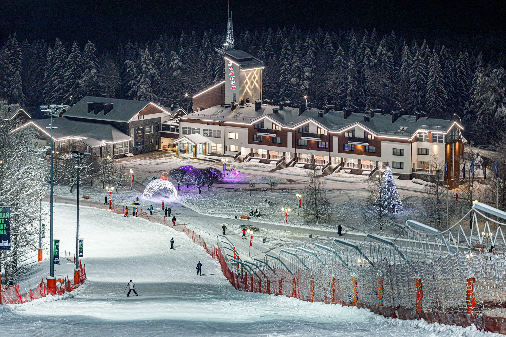
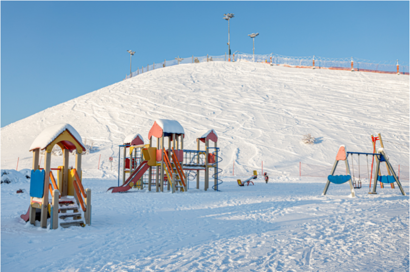
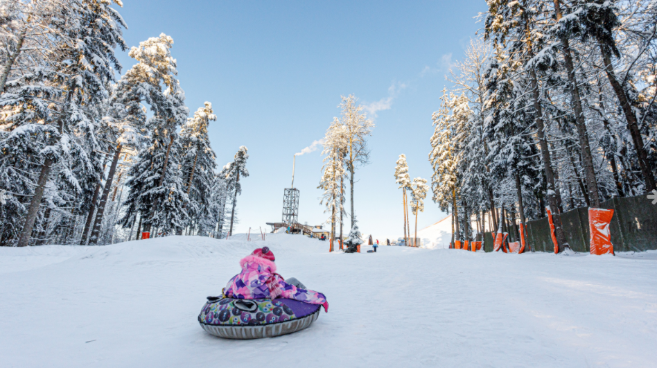
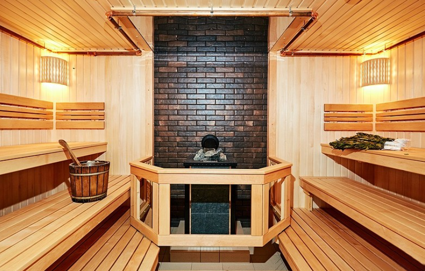
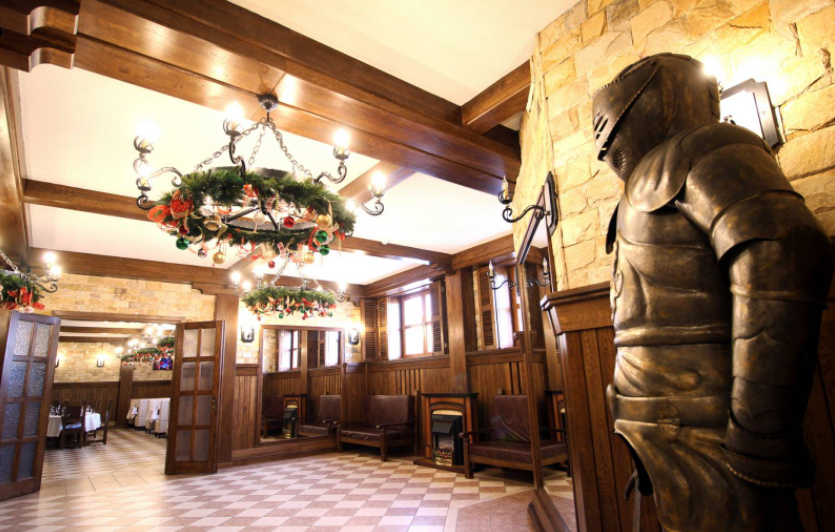
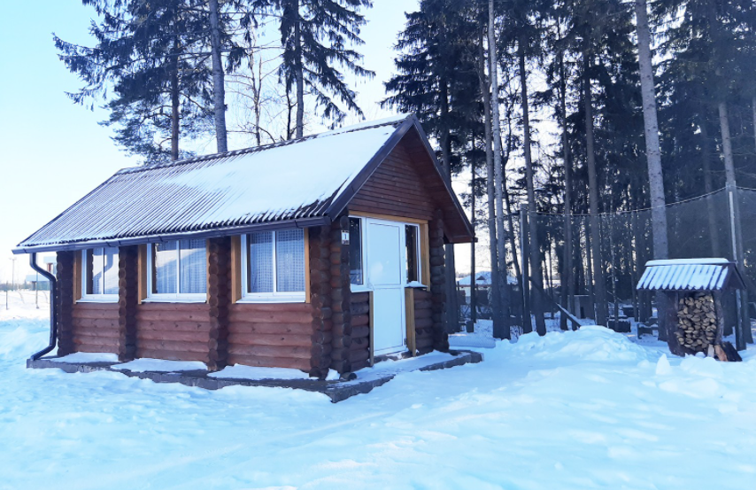
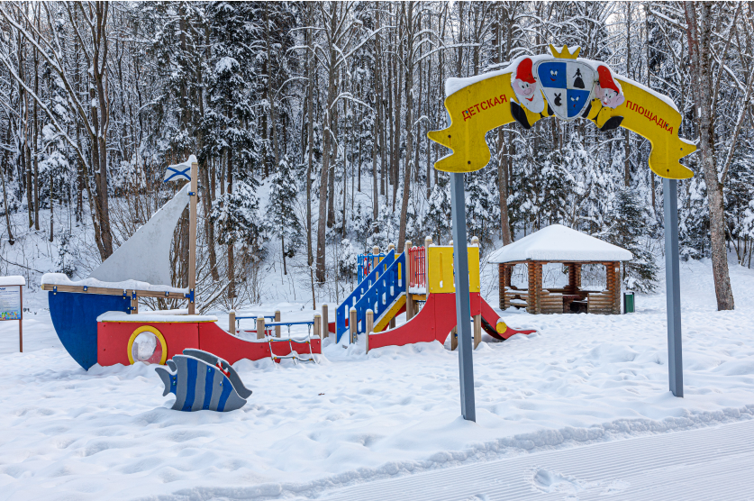
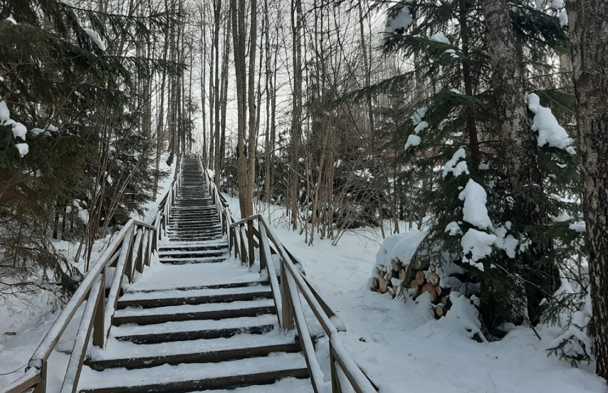

О Силичах
Центр семейного отдыха «Силичи» расположен в уникальном для Беларуси месте с перепадами рельефа до 30 метров. Ежегодно центр посещает огромное количество любителей активного зимнего отдыха, чтобы покататься на лыжах или насладиться другими зимними развлечениями. Здесь, в окружении хвойного леса находятся 10 горнолыжных трасс различного уровня сложности.
Для проживания на территории центра вас ждут уютные номера. Если планируете провести романтический уикенд – самым подходящим вариантом будет номер категории «Эконом» или «Стандарт». Для большой компании или семьи с детьми мы рекомендуем двухуровневые номера категории «Suite» или «Family Suite»: выход на улицу прямо из номера, уютная терраса с прекрасным видом.

Не катаетесь на лыжах или сноуборде, но хотели бы посмотреть на зимние Силичи с высоты птичьего полета? Прокатитесь на канатной дороге. Вы сможете насладиться прекрасными видами и склонами. Прогулка на канатной дороге станет Вашим увлекательным путешествием, которое никогда не забудется. Подарите себе и близким незабываемые впечатления.

Для детей предусмотрены сразу две оборудованные игровые площадки: на верхней станции, сразу на въезде и на нижней станции, у озера. Тюбинговая трасса будет отличным развлечением для детей.
Зимний сезон – прекрасная пора, чтобы приобщить ребенка к спорту. Нет ничего полезнее, чем занятия на свежем воздухе, полные эмоций и впечатлений. Регулярные физические нагрузки крайне важны для растущего организма. «Силичи» – отличная площадка для первых шагов в мире зимних видов спорта!

Чтобы расслабиться посетите банный комплекс – настоящие русские бани на дровах с бассеином. Мы распарим для Вас веники ручной вязки и заранее подготовим лёд для охлаждения напитков. Большие парные и вместительные комнаты отдыха подойдут для любых компаний.

Попробуйте традиционные блюда европейской и белорусской национальной кухни в ресторане «Силичи».
Торжество или мероприятие можно провести в ресторане «Завируха». Просторный зал, где комфортно могут отдохнуть до 300 человек. Живописное место, интересный интерьер, еда по-домашнему и авторская подача блюд сделают Ваш праздник запоминающимся.

На территории центра предусмотрены зоны барбекю: возле беседок установлены мангалы и дровница с просушенными дровами. В шаговой доступности предусмотрены оборудованные санузлы. Можно воспользоваться беседками открытого типа, которые расположены на берегу лесного озера, в самом сердце леса. Плохая погода не помешает Вашему отдыху, если Вы выберете беседку закрытого типа.

Не катаетесь на лыжах или сноуборде, но хотели бы посмотреть на зимние Силичи с высоты птичьего полета? Прокатитесь на канатной дороге. Вы сможете насладиться прекрасными видами и склонами. Прогулка на канатной дороге станет Вашим увлекательным путешествием, которое никогда не забудется. Подарите себе и близким незабываемые впечатления.

Обязательно прогуляйтесь по «Тропе здоровья». Это 406 ступенек по оборудованной тропе вдоль кромки леса.

Чистый лесной воздух, огромная территория, прекрасные виды и потрясающая природа не оставят никого равнодушным.